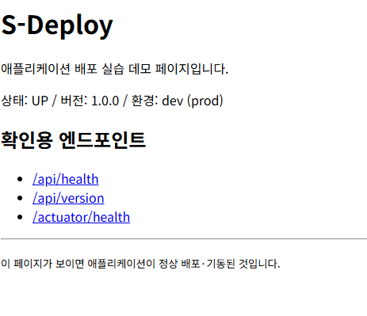
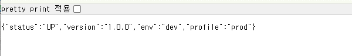
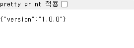
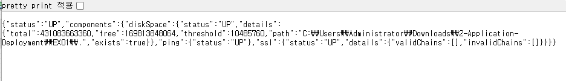

| 과 제 명 | S-Deploy 배포 파이프라인 | 작 성 자 | 2 조 | 작 성 일 | 2026-07-07 |
|---|---|---|---|---|---|
| 대상 환경 | JDK 21 / Spring Boot 3.5 / Gradle | 검 토 자 | 정우균 | 페 이 지 | 1 / 1 |
| 항목 | 구성 내용 |
|---|---|
| 런타임 | JDK 21 · Spring Boot 3.5.x · Gradle |
| 프로파일 / 포트 | dev = 8080 / prod = 9090 (--spring.profiles.active=prod) |
| 빌드 산출물 | build/libs/app.jar (bootJar 이름 고정) |
| 릴리스 보관 | releases/app-1.0.0.jar (롤백 대비) |
| 검증 명령 | ./gradlew test |
|---|---|
| 결과 | BUILD SUCCESSFUL — HealthControllerTest 3건 통과 (헬스/버전/앱정보 엔드포인트 정상) |
| 환경설정 점검 | 포트(8080/9090)·프로파일(dev/prod)·버전(1.0.0) 이 명세와 일치함 |
| 빌드 명령 | ./gradlew clean bootJar |
|---|---|
| 산출물 | build/libs/app.jar (약 23MB) 생성 성공 |
| 릴리스 보관 | releases/app-1.0.0.jar 사본 저장 완료 |
> Task :test BUILD SUCCESSFUL
> Task :bootJar build/libs/app.jar 생성
| 실행 명령 | java -jar build/libs/app.jar --spring.profiles.active=prod |
|---|---|
| 기동 확인 | Tomcat started on port 9090 · Started DemoApplication |

[그림 0] http://localhost:9090/ — 배포 확인용 기본 페이지 (상태 UP·버전·프로파일 표시)

[그림 1] GET /api/health → {"status":"UP","version":"1.0.0","env":"production","profile":"prod"}

[그림 2] GET /api/version → {"version":"1.0.0"}

[그림 3] GET /actuator/health → {"status":"UP", diskSpace/ping/ssl 모두 UP}
| 롤백 사유(가정) | 배포본(app.jar) 어플리케이션 결함 상황 |
|---|---|
| 롤백 명령 | ./scripts/rollback.sh 1.0.0 |
| 복원 결과 | releases/app-1.0.0.jar → build/libs/app.jar 복원 완료 |
| 복원 확인 | 재실행 후 /api/version = 1.0.0 으로 이전 버전 정상 복원 확인 |
| 구분 | 확인 항목 | 결과 |
|---|---|---|
| ① | 배포 환경(빌드설정·프로파일·릴리스) 구성 | 완료 |
| ② | 소스 검증(test 통과·환경설정 점검) | 완료 |
| ③ | 빌드(app.jar 생성·릴리스 보관) | 완료 |
| ④ | 배포(prod 실행)·헬스체크·롤백 | 완료 |
| 작성자 | 2조 (인) |
|---|---|
| 검토자 | 정우균 (인) |